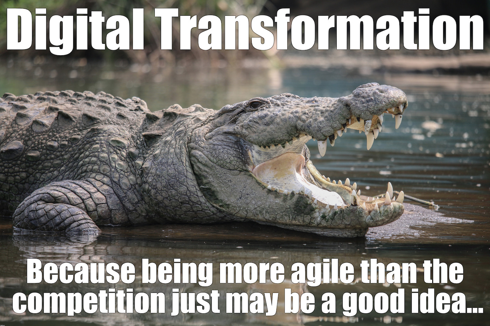
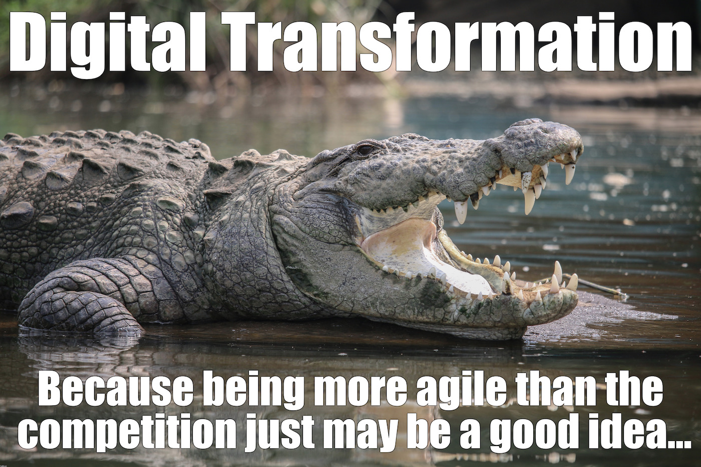

APIs and IoT
Standards for the Internet of Things (IoT):
Workshop at the Max Planck Institute (MPI) for Innovation and Competition [https://www.ip.mpg.de/]
Erik Wilde (@dret)
API Academy, CA Technologies
October 8, 2018
 [http://creativecommons.org/licenses/by/3.0/]
[http://creativecommons.org/licenses/by/3.0/]
This work is licensed under a CC
Attribution 3.0 Unported License [http://creativecommons.org/licenses/by/3.0/]


 
